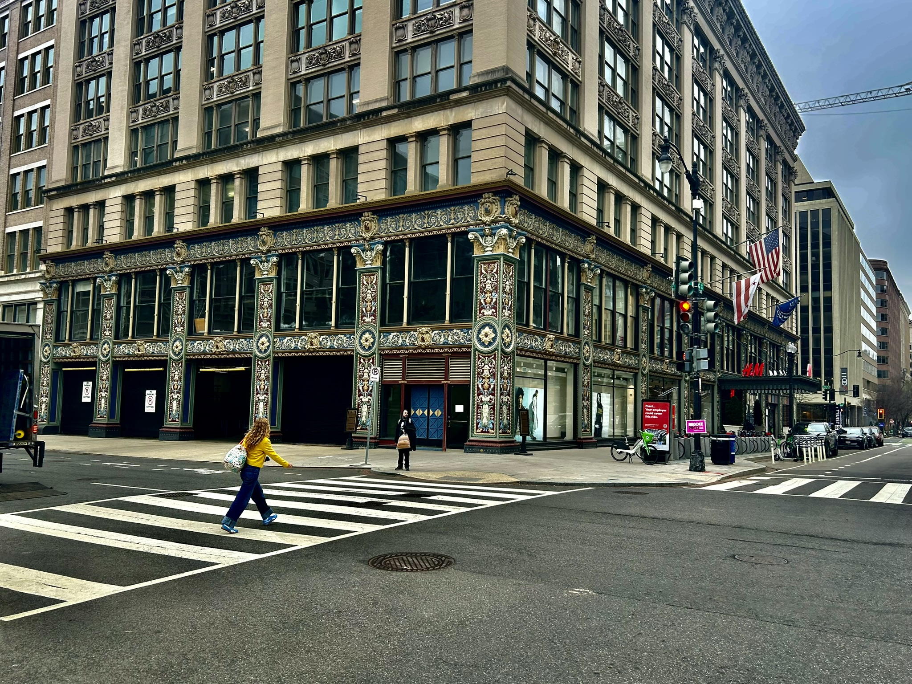
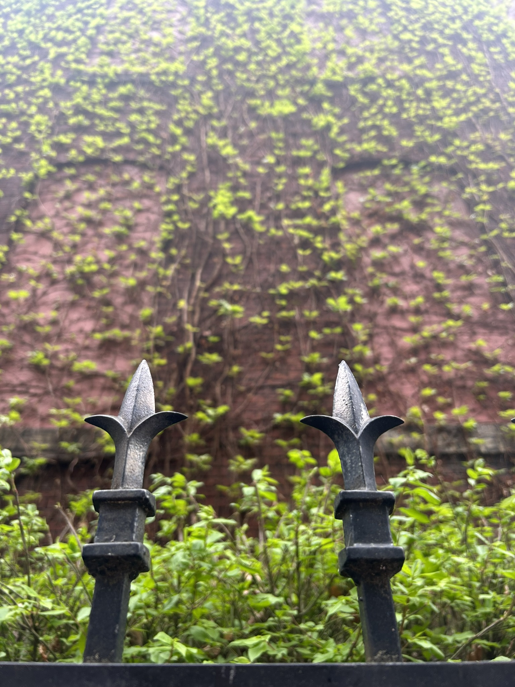

When I was at the Steven F. Udvar-Hazy Center in mid-July 2025, walking back to the car from visiting we were watching planes land at the neighboring Dulles Airport. Seeing this, I had also spotted a monument up ahead with a very unique curved shape. Not realizing that the next plane to land was a Boeing 777, as of taking it having only 1,600 to 1,700 flying units worldwide. Both being a rare plane, and a perfect timing with the photo, makes it one of my favorite photos, if not my favorite.

In early April of 2026, I had traveled up to Washington DC, and on the way to go visit the International Spy Museum, the unique outside of this H&M had caught my eye. I ended up taking a photo while crossing the street, and tweaked it a bit to make the colors of both the building, and the lady's yellow shirt pop. I also havea version where I cropped it to be the aspect ratio of an album cover, because the placement of everyting could work well as one.

With a lot of roadwork going on around my area, for some reason the construction teams had left just a singular tree, being somewhat in the shape of an Acacia tree from Minecraft. One day on a walk around that area, I had gotten a picture of the tree, which is complimented by the overcast background.

When I had visited my grandfather to go through some old CD's and get some physical media gear, walking out I had seen an old decrepit house, that seemed to be abandoned. Snapping a picture before I left, I then edited it to have it in more of an "artistic" style, and cropped it to have the aspect ratio of an album cover.

On the same trip to DC from the H&M Photo, about a block or two away from the hotel was a wall covered in ivy, with a very intricate fence around it. I took this picture, while having the green contrast the neutral colors in the background.